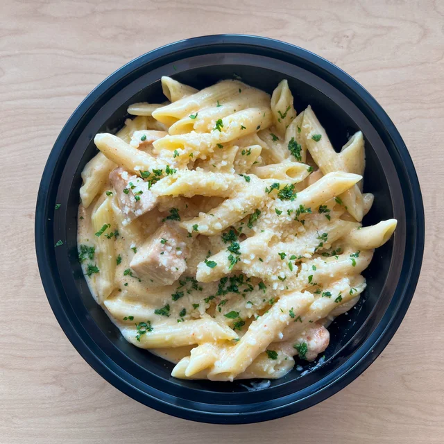

pepperoncini
Creamy Pepperoncini Chicken Recipe

How to Make a Creamy Pepperoncini Chicken Recipe
This creamy pepperoncini chicken is a great weeknight one skillet meal that's quick and easy to make! Serve with orzo, potatoes, pasta, or rice.
Pepperoncini Ingredients
- 1 pound skinless, boneless chicken breasts